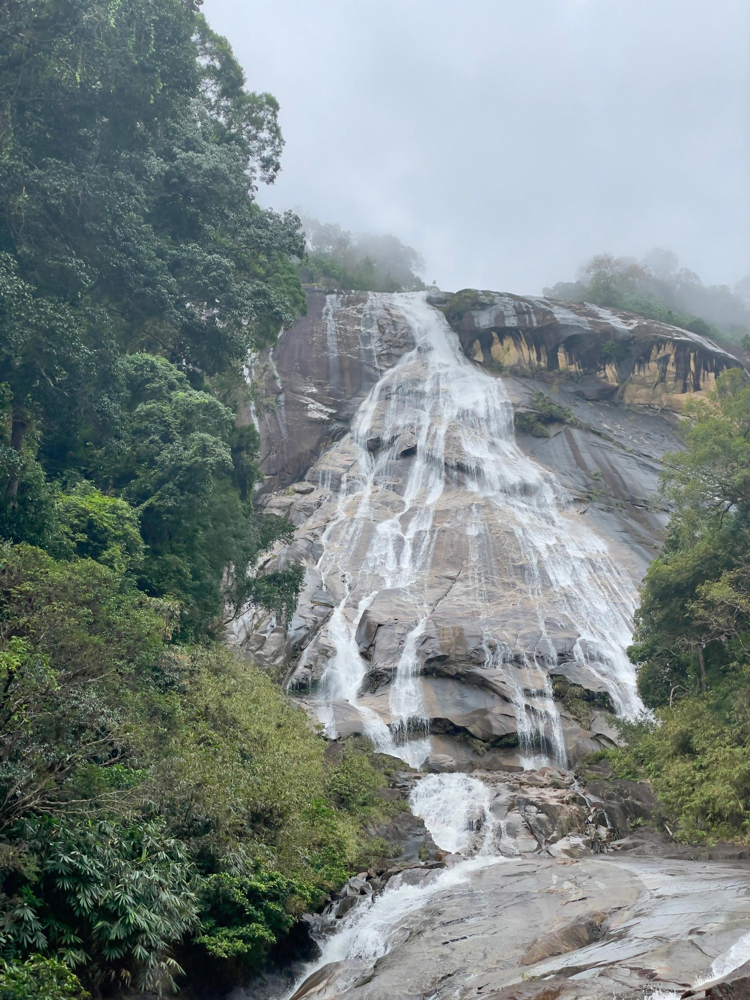

Dive into captivating stories, challenge your knowledge with eco-quizzes, and embark on virtual journeys through Malaysia's breathtaking landscapes.
Welcome To Our MyEcoSystem
MyEcoSystem is your gateway to discovering Malaysia's rich natural heritage. We transform academic research into engaging, interactive experiences, making environmental education accessible and exciting for everyone. Whether you're a student, a nature enthusiast, or just curious, our platform offers a unique way to connect with Malaysia's diverse ecosystems.
Explore fascinating insights into forest carrying capacities, vital mangrove conservation efforts, and the powerful role of social media in promoting sustainable eco-tourism. Join us in appreciating, exploring, and protecting the natural beauty that surrounds us!
KL Eco Forest
A green oasis in the heart of the city. Discover its unique biodiversity and iconic canopy walk.
Sijangkang Mangrove
Unravel the mysteries of the mangrove ecosystem, a crucial natural defense and wildlife sanctuary.

KESEDAR Research
Delve into regional development and how social media is shaping the future of eco-tourism.
Chat with Support
ü§ñ
Hi there! How can I help you today?
About Us: Our Vision for Nature
"My EcoExperience" is more than just a website; it's a vibrant community hub dedicated to sharing the personal stories and profound experiences of individuals who journey through Malaysia's natural treasures. From serene parks to majestic forests and bustling eco-tourism sites, we believe that personal connection amplifies appreciation.
The phrase "Through People and Media" encapsulates our core mission: to showcase how people engage with nature and share their adventures through compelling social media content, insightful videos, and stunning photography. Our platform transforms academic research into digestible, inspiring narratives.
Our Guiding Objectives:
Boost Awareness
To enhance awareness and understanding of student research on Malaysia's natural attractions and sustainable tourism.
Ignite Engagement
To develop an enjoyable, interactive experience that motivates continuous engagement with our platform and its valuable content.
Ensure Accessibility
To provide accessible, user-friendly content, tailored to our target audience, on social media's role in promoting natural attractions.
Our Eco-Destinations
Embark on a virtual journey through Malaysia's captivating natural attractions. Each destination offers a unique learning experience, from lush forests to vital mangrove ecosystems.
KL Eco Forest
Step into an urban jungle oasis. Discover the history, the thrilling canopy walk, and the secrets of sustainable tourism management in the heart of Kuala Lumpur.
Sijangkang Mangrove
Journey into the critical mangrove ecosystem. Learn about its vital role in protecting coastlines and nurturing diverse wildlife, then test your knowledge with our eco-challenge!
KESEDAR Research
Uncover the impactful work of KESEDAR in regional development. Understand how social media plays a pivotal role in promoting and influencing tourism in natural areas.
KL Forest Eco Park: The Green Heart of Kuala Lumpur
Step into KL Forest Eco Park, a living testament to Kuala Lumpur's commitment to nature. Formerly known as Bukit Nanas Forest Reserve, this urban jungle sanctuary holds the distinction of being Malaysia's oldest permanent forest reserve, gazetted way back in 1906. It stands as a remarkable paradox, a lush, vibrant tropical rainforest thriving amidst the city's modern skyscrapers, offering a unique blend of urban and natural landscapes.
This park isn't just a green space; it's a critical ecological haven, providing vital oxygen and supporting diverse flora and fauna right in the heart of the bustling metropolis. Its presence reminds us of the delicate balance between rapid urbanization and environmental preservation.
Experience the Canopy Walk
One of the park's most iconic features is its impressive Canopy Walk. Suspended 21 meters (approximately 70 feet) above the forest floor and stretching 200 meters (about 656 feet) long, this walkway offers an exhilarating perspective of the rainforest. From up here, you'll be eye-level with the lush canopy, observing the intricate life within the trees, and enjoying breathtaking panoramic views of the Kuala Lumpur city skyline peeking through the foliage.
It's a perfect spot for photography enthusiasts and anyone looking to connect with nature from a unique vantage point.
A Haven of Biodiversity
Despite its urban setting, KL Forest Eco Park is a treasure trove of biodiversity. Keep your eyes peeled for the park's fascinating residents:
Flora: Discover towering Keruing trees, vibrant wild orchids, and a dense undergrowth of ferns and other tropical plants. The park is a living laboratory of rainforest ecology.
Fauna: While large mammals are rare, you might spot long-tailed macaques swinging through the trees, various species of squirrels, and a delightful array of tropical birds whose calls echo through the canopy. It's a fantastic spot for birdwatching!
Insects & Reptiles: The forest floor and foliage teem with interesting insects, butterflies, and occasional reptiles, adding to the park's vibrant ecosystem.
Wander Through Enchanting Nature Trails
The park features several well-marked and easily navigable nature trails, including the Symington, Arboretum, and Penarahan trails. These paths offer varying lengths and difficulties, suitable for a relaxed stroll or a more energetic hike. Each trail provides a unique sensory experience, from the earthy scent of the forest to the rustling leaves and distant bird calls.
Along these trails, educational signboards provide insights into the different tree species, their medicinal properties, and the importance of preserving this precious ecosystem. It's a fantastic opportunity for both casual visitors and students to learn more about tropical rainforests.
Plan Your Visit & Share Your Journey
Ready to explore? Here's essential information and how you can engage further with MYECOSYSTEM:
Address: Kuala Lumpur Eco Park, Kuala Lumpur, 57000 Kuala Lumpur, Federal Territory of Kuala Lumpur
Opening Hours: Daily: 8.00 AM - 5:30 PM
Admission: Check official park websites for the latest admission fees.
Best Time to Visit: Early mornings are ideal for cooler temperatures and better wildlife spotting opportunities. Avoid visiting during heavy rain.
What to Bring: Comfortable walking shoes, insect repellent, water, and a camera!
Find your way there! View the KL Forest Eco Park on the map:
KL Forest Eco Park Game!
Enjoy playing our eco-themed game!
Welcome to KL Eco Forest Park
KL Eco Park is one of the oldest permanent forest reserves in Malaysia, located in the heart of Kuala Lumpur. Let us guide you through this natural wonder in a step-by-step story mode experience.
Canopy Walk
Walk among the treetops on the 200-meter-long canopy walkway suspended 21 meters above the forest floor. Get a breathtaking view of the forest canopy and the KL skyline.
Nature Trails
Explore forest trails that wind through tropical flora, offering educational insights into Malaysia's rainforest biodiversity and ecosystem.
KL Tower View
From within the forest, look up to see the majestic KL Tower rising above the trees — a unique blend of nature and modern city life.
Discover the Fauna
Keep an eye out for long-tailed macaques, squirrels, and exotic birds that call this forest home. The park is a natural classroom!
End of Tour
Thank you for joining the virtual tour of KL Eco Park. We hope this story mode helped you appreciate the balance between urban development and nature preservation.
KL Eco Forest: Are You Here?
Are you currently at KL Forest Eco Park?
KL Eco Forest: Find Your Way!
Planning your visit? Here's the map to KL Forest Eco Park. We hope to see you there soon to share your reactions!
Address: Kuala Lumpur Eco Park, Kuala Lumpur, 57000 Kuala Lumpur, Federal Territory of Kuala Lumpur
Opening Hours: Daily: 8.00am - 5:30pm
KL Eco Forest: Your Reactions!
We'd love to hear your live reactions from KL Forest Eco Park. Click on the emojis to share your thoughts!
Nestled in Selangor, Malaysia, near Telok Panglima Garang, Sijangkang is more than just a tranquil village, it is home to a vibrant and critically important mangrove forest. These unique ecosystems are not merely beautiful landscapes, they serve as a crucial natural defense against coastal erosion and storm surges, protecting both the land and its communities.
Sijangkang's mangroves are vital nurseries for countless marine species, providing a rich feeding ground and breeding area for fish, crabs, and other aquatic life. They also support a diverse array of terrestrial creatures, making the park a true hotspot of biodiversity and a testament to nature's resilience.
The Ecological Importance of Mangroves
A respectable horticultural facility. In addition to providing vital agricultural supplies like fertilizer and gardening tools, the nursery specializes in the production and distribution of a broad range of tropical fruit tree saplings, including citrus, durian, and mango. The center is open every day and serves both commercial farmers and individual gardeners. It actively promotes sustainable agricultural methods and local agro-business. Pusat Nurseri Sijangkang has grown to be a significant player in the area's agricultural industry thanks to its advantageous location, extensive plant choices, and dependable customer support.
Sijangkang Mangrove Walk: A Journey Through Mud and Nature
This photo captures a spontaneous and muddy moment during an outdoor activity in Sijangkang, where participants found themselves immersed in nature quite literally. With boots caked in thick mud and sunlight streaming through the mangrove canopy, the experience reflects the unpredictable yet rewarding nature of exploring Malaysia’s rich ecosystems. The wooden planks beneath their feet suggest a trail through a wetland or mangrove area, offering both challenge and adventure. It’s a reminder that meaningful learning and connection with the environment often come from stepping out of comfort zones and embracing the messiness of real-world exploration.What will tourists get?
Hands-On Learning: Walking through the muddy pathways provided an immersive learning experience about the biodiversity and importance of mangrove ecosystems.
Immersive Nature Walks: Explore wooden walkways and muddy trails that run through the heart of the mangrove forest.
Hands-On Eco Adventure: Walking through soft, wet mud offers a fun, physical experience that connects visitors directly with the environment.
Community Involvement & Visitor Activities
The local community of Sijangkang plays a vital role in the conservation and management of the mangrove park. Their dedication ensures the preservation of this natural heritage while promoting sustainable eco-tourism.
Visitors can enjoy various activities that offer an immersive experience:
Boardwalk Strolls: Explore the dense mangrove forest via well-maintained wooden boardwalks, offering close-up views of the unique flora and fauna.
Photography: Capture the stunning natural beauty, from intricate root systems to vibrant wildlife.
Educational Tours: Many local guides offer insightful tours, sharing knowledge about the ecosystem and its importance.
Achievements & Eco-Challenge!
Celebrate the dedication and hard work that has earned Paya Bakau Sijangkang recognition for its outstanding conservation efforts!
Discover the numerous replanting programs and corporate social responsibility (CSR) initiatives that actively contribute to the ongoing health and expansion of Sijangkang's vital mangrove ecosystem.
Address: Sijangkang, Selangor, Malaysia (Exact entrance points might vary, but this gives a general area near Telok Panglima Garang)
Best Time to Visit: Check local tides for optimal viewing .
Curious to see where these natural wonders thrive? Find Sijangkang on the map!
Ready to test your knowledge of this amazing ecosystem? Take the Sijangkang Eco-Challenge!
Sijangkang Knowledge Quiz
Your Score: 0 / 0
Sijangkang Mangrove Park: Find Your Way!
Explore the location of Sijangkang Mangrove Park on the map.
Address: Sijangkang, Selangor, Malaysia (Exact entrance points might vary, but this gives a general area near Telok Panglima Garang)
Best Time to Visit: Check local tides for optimal viewing of mudskippers and other intertidal life.
KESEDAR Research: Shaping Regional Futures
The South Kelantan Development Authority (KESEDAR), established on 1 May 1978, plays a pivotal role in balancing population distribution, alleviating poverty, and restructuring society in South Kelantan. This region, characterized by its hilly terrain with nearly 50% slopes exceeding 25°C, presents unique developmental challenges. Despite its vast area, only 20% holds potential for agricultural expansion, emphasizing the importance of strategic planning and diversified growth.
KESEDAR's initiatives extend beyond traditional development, focusing on sustainable practices and leveraging modern tools like social media to promote tourism in natural areas. Explore how their research contributes to a balanced and prosperous future for the region.
Natural Attractions in South Kelantan
While KESEDAR operates within the state of Kelantan, its focus area, South Kelantan, is rich with diverse natural attractions. These range from majestic waterfalls and ancient limestone caves to lush rainforests, offering unique eco-tourism experiences.
Dabong, Kelantan: Gateway to Nature's Grandeur
Dabong, a district within Kelantan, is a true hidden gem for nature lovers, often serving as the primary gateway to some of the state's most spectacular natural wonders. Its landscape is dominated by dense rainforests and dramatic karst formations.
Gunung Stong State Park: Home to the iconic Jelawang Waterfall (also known as Stong Waterfall), which is one of the highest waterfalls in Southeast Asia, cascading over multiple tiers. The park offers challenging trekking trails, lush flora, and opportunities for wildlife spotting.
Limestone Caves: The area is dotted with impressive limestone caves, including Gua Ikan (Fish Cave) and Keris (Keris Cave). These caves feature intricate rock formations and provide insights into geological processes, often with historical or cultural significance.
Recreational Activities: Visitors can engage in various activities such as jungle trekking, cave exploration, camping, and enjoying natural pools at the base of waterfalls.
Witness the awe-inspiring cascade of Jelawang Waterfall, one of Southeast Asia's highest, as it carves its path down ancient rock formations in Gunung Stong State Park. Truly a spectacle of nature's power!
Gaze upon a breathtaking sunrise over the misty valleys of Dabong. The golden hues painting the clouds create a serene and unforgettable start to your adventure in this natural paradise.
Our Work in Pictures: Promoting KESEDAR Regions
A welcoming banner heralds your arrival at Baha Camp Stong, nestled amidst the lush greenery of Gunung Stong State Park. Adventure awaits!
Follow the path less traveled! This vibrant jungle signpost points the way to Gunung Stong, Gunung Ayam, and Kem Baha, guiding adventurers deeper into the heart of nature.
A poignant reminder in the wilderness: "Nasib Alam Bergantung Kepada Perilaku Kita, Amalkan Integriti" (The Fate of Nature Depends on Our Behavior, Practice Integrity). A powerful message for every eco-traveler.
Immerse yourself in the ethereal beauty of a mist-shrouded rainforest. The towering trees, cloaked in a soft veil, evoke a sense of mystery and tranquility.
An informative sign at Kem Baha offers insights into the geology and unique features of this captivating area, providing context to your natural discoveries.
Key Areas of KESEDAR's Impact:
Poverty Eradication: Implementing programs to uplift communities and improve living standards.
Social Restructuring: Fostering balanced growth and equitable opportunities across the region.
Sustainable Tourism: Promoting natural attractions responsibly, often leveraging social media for outreach.
Agricultural Development: Identifying and maximizing the potential of limited agricultural land.
KESEDAR's pioneering efforts continue to shape the socio-economic landscape of South Kelantan, ensuring a harmonious balance between development and environmental preservation.
Test Your KESEDAR & Dabong Knowledge!
Think you know KESEDAR and the natural wonders of Dabong? Take our quiz to find out and deepen your understanding!
Location & Map
Headquarters: Gua Musang, Kelantan (formerly Kota Bharu)
Interested in KESEDAR's central hub? See their headquarters on the map!
KESEDAR Knowledge Quiz
Your Score: 0 / 0
KESEDAR Headquarters: Find Your Way!
Explore the location of KESEDAR Headquarters on the map.
Address: Gua Musang, Kelantan (formerly Kota Bharu)


![[A clear sign for 'Pusat Nurseri Bakau Sijangkang' amidst lush greenery]](RANDOM PICTURE AT PAYA BAKAU.jpg)
![[Mud-covered boots on a wooden boardwalk, showing immersion in the mangrove environment]](PAYA BAKAU RANDOM.jpg)
![[Display board showcasing 'Paya Bakau' achievements with awards and certifications]](PAYA BAKAU SIJANGKANG ACHIEVEMENT.jpg)
![[Another display board detailing various mangrove planting programs and CSR projects]](SIJANGKANG PAYA BAKAU ACHIEVEMENT 2.jpg)